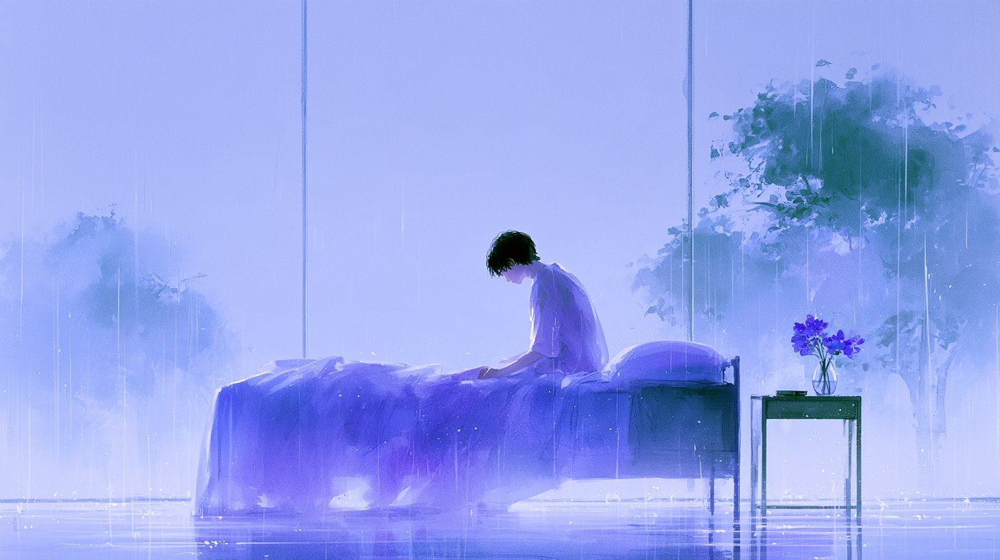
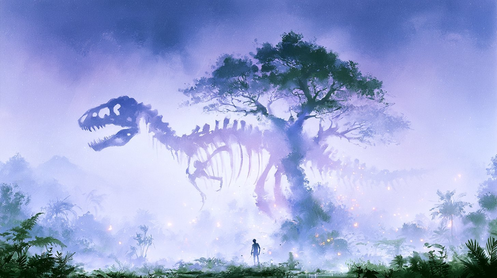

Violet Watercolour Haze
An hourglass holding a tiny world, swirled by a galaxy in violet-blue watercolour mist; one sref ties a set of four images together.
| Creator | Umesh @umesh_ai |
|---|---|
| Platform | X |
| Model | Midjourney |
| Likes | 40 |
| Posted | 2026-10-22 |
| Visual style | Watercolor storybook Surreal / dreamcore |
| Regional vibe | No specific region |
| Genre | Fantasy / myth |
| Mood | Lonely / melancholy |
Prompt · from the post
--sref 820221253